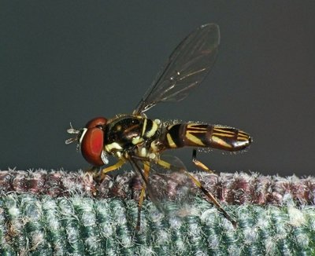

Allograpta annulipes
Allograpta annulipes
Autor: Sidnei Dantas
Fotografía original · CC-BY-SA · Taxón identificado
Redimensionada a un máximo de 400 px y convertida a JPG. Se muestra completa, sin recorte. La fotografía identifica el taxón; no demuestra una observación en Kennedy.